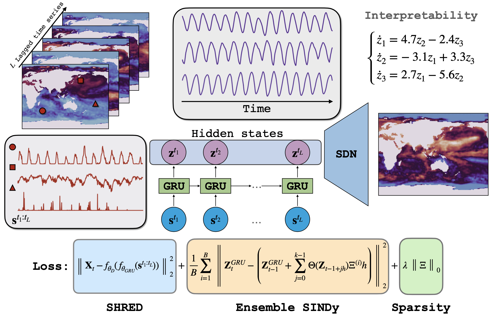

Mars (Liyao) Gao

Ph.D. student
Paul G. Allen School of Computer Science & Engineering
University of Washington
About me
I am a Ph.D. candidate in the Paul G. Allen School of Computer Science & Engineering at the University of Washington, advised by Professor J. Nathan Kutz. My research focuses on AI for science and scientific discovery, developing interpretable and generalizable learning frameworks for complex spatiotemporal systems. I work at the intersection of deep learning, physics learning, and scientific computing, aiming to uncover governing equations and enable reliable long-term prediction to accelerate scientific discovery. My long-term goal is to build robust machine learning methods that can bridge data and physical laws across domains like physics, climate science, fluid dynamics, neuroscience, and materials science. I am broadly interested in deep learning, statistical learning theory, Bayesian methods, time-series modeling, scientific computing, and recently agentic flow for science.
News
Selected publications
|  | Sparse identification of nonlinear dynamics and Koopman operators with Shallow Recurrent Decoder Networks. |
 |
Bayesian autoencoders for data-driven discovery of coordinates, governing equations and fundamental constants. |
 |
Convergence of uncertainty estimates in ensemble and Bayesian sparse model discovery. |
 |
Deformation Robust Roto-Scale-Translation Equivariant CNNs. |
 |
On Optimal Early Stopping: Over-informative versus Under-informative Parametrization. |
Sudoku break
Contact
Email: marsgao [at] uw [dot] edu